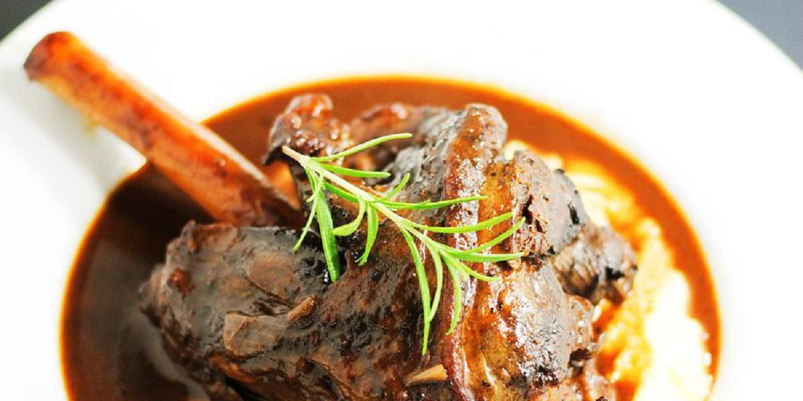

Lamb Shank
Recipe Specification
Ingredients List
| Ingredients | Quantity |
|---|---|
| Lamb Shank | 4x1 |
| Carrots | 2x1 |
| White Onion | 1x1 |
| Garlic Cloves | 3 Cloves |
| Bay leaves | 2x1 |
| Rosemary | 2 sprigs |
| Red Wine | 750ml |
| Chicken Stock | 400ml |
| Brown Sugar | 15g |
| Cornflour | 2 tsp |
| Vegetable Oil | 40ml |
| Salt & Pepper | To Season |
Yield: 4 portions
Preparation
- Peel and slice white onion.
- Peel and dice carrots.
- Pre-heat oven to 160’C.
- Season lamb shank with salt and pepper.
Cooking Instructions
- Place a frying pan on a medium/high heat and add vegetable oil.
- Sear lamb shanks so they are evenly browned before placing in a deep baking dish.
- In same frying pan, cook the carrot, onions, garlic, bay leaf and rosemary for 4-5 minutes.
- Add red wine, chicken stock and brown sugar, bring to the boil and reduce to the simmer.
- Add mixture to the deep baking dish with lamb shanks and add water if needed to submerge meat.
- Cover dish with 2 layers of foil and place in the oven for 3 hours.
- Remove the shanks from dish and leave to rest under foil.
- Mix cornflour with cold water and add to cooking liquor to create thicker sauce. Season to taste and return shanks to sauce.

Serving Suggestions
Lamb shank goes great with creamy mash potato and roasted carrots.
Storing instructions
Allow Shank to cool to room temperature before putting in an air-tight container and placing in the refrigerator. Consume within 4 days of making it
Reheating Instructions
Place in the microwave for 2-3 minutes until piping hot.